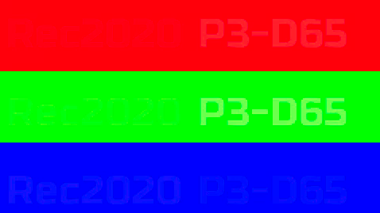

Web browser color management for Video
We will be doing a number of tests comparing PNG files with ICC profiles against video files with NCLC tags. In theory they should match.
There are four possible tags that you can apply to movies:
Gamut Tests (color_primaries flag)
How good is your browser at remapping source media of an expanded gamut (e.g. rec2020 or Display-p3) to your display.
Your monitor reports:| PNG file | Mp4 file (which should match PNG file) |
|---|---|
 |
 | What the image should look like if nothing is working, or you have a rec2020 monitor. |
|  | What the image should look like if you have a display-p3 monitor. |
Chrome on windows, and Safari and Chrome on IOS will always assume the display is sRGB. In theory chrome://flags/#force-color-profile should give you some settings for this, but it seems to be ignored.
Transfer function tests (color_trc flag)
This is setting the transfer function, which is typically going to be related to the gamma of the display. There are a number of existing gamma profiles, e.g. rec709 or sRGB, as well as gamma 2.2, and 2.8. Having said that, rec709 is frankly rather useless, consequently we recommend using sRGB as a default.
For more details see: here
SRGB
Using the -color_trc 13 flag. This appears to be the most reliable one, working across all machines and browsers that support it.
 | Source SRGB PNG |
| Mp4 Video should match PNG |
rec709
Using the -color_trc 1 flag. This is often the default tag, however producers the most confusing results. On Chrome this will actually match sRGB, but on safari it will match the camera rec709 parameters, which roughly match gamma 1.95. NOTE, there is no support at all for BT1886, which is what we would conventionally use for the TV gamma of 2.4, the closest you can get is using quicktime on OSX.
| This is the rec709 mp4. | |
| This is a quicktime with a gamma of 1.95. This should be nearly identical to the above rec709 mp4, which implies OSX is correctly interpreting camera rec709. | |
| This is the srgb.mp4 which may match the rec709 result. For chrome on windows, this should match rec709, which implies its treating it as sRGB. |
 | Screenshot of mp4 of chrome on windows |
 | Screenshot of mp4 of safari on OSX |
Gamma 2.2
Using the -color_trc 2 flag. This does not work correctly on safari.
| Source gamma 2.2 PNG | |
| Mp4 Video should match PNG |
Gamma linear
Using the -color_trc 8 flag. This is unlikely to ever be used for video, however it does make for a good test that something is working.
| Source linear PNG | |
| Mp4 Video should match PNG |
Color Range
Normal RGB to YUV conversion will end up using the TV range of 16-235 values (using the -color_range 1 parameter) however you can encode your media using the full-range 0-255 values, which is specified with the -color_range 2 parameter, NOTE this does require you to do a different scaling in ffmpeg. This does seem fairly reliable on all web browsers, but there may be applications that may not interpret this correctly. For more details see: here | Source PNG |
| Conventional tv range 16-235 | |
| Conventional full range 0-255 |
Color space
Currently all web browsers only support YUV as a source for video. There are 3rd party apps that support RGB, e.g. RV. This can be a useful option for eliminating any RGB to YUV conversions.Browser testing
This is a summary of browser compatibility. For a detailed breakdown of what browsers support what flags see: here| Firefox | Has no support for color_trc or color_primaries flags on any platform. |
| Safari on OSX | Has the best support of any browser, but its not complete. Gamma 2.2 is completely wrong, as is gamma 2.8, the rec709 support is questionable. |
| Safari on IOS | Has no support for color_trc or color_primaries flags on any platform. |
| Chrome | Has no support on linux, some support on OSX and limited support on windows. The windows support is hit and miss since they have disabled any direct support for monitor ICC profiles and appear to rely on you setting chrome://flags/#force-color-profile. |